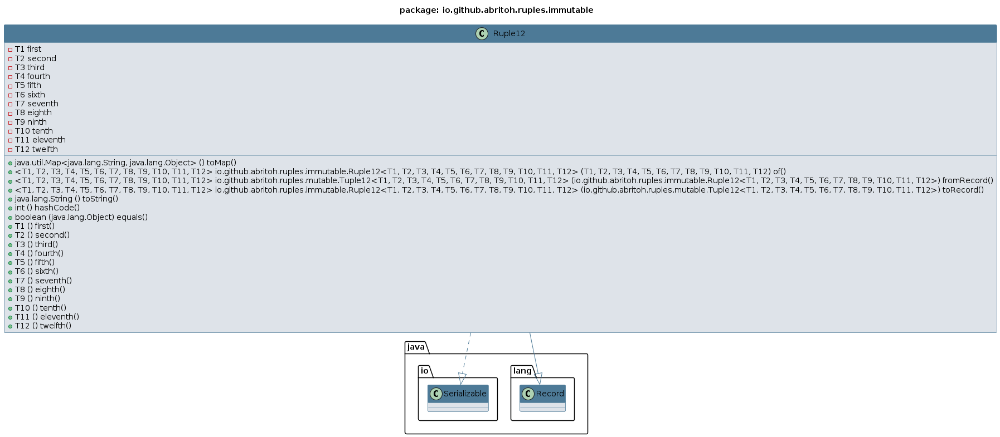

Record Class Ruple12<T1,T2,T3,T4,T5,T6,T7,T8,T9,T10,T11,T12>
java.lang.Object
java.lang.Record
io.github.abritoh.ruples.immutable.Ruple12<T1,T2,T3,T4,T5,T6,T7,T8,T9,T10,T11,T12>
- All Implemented Interfaces:
Serializable
public record Ruple12<T1,T2,T3,T4,T5,T6,T7,T8,T9,T10,T11,T12> (T1 first, T2 second, T3 third, T4 fourth, T5 fifth, T6 sixth, T7 seventh, T8 eighth, T9 ninth, T10 tenth, T11 eleventh, T12 twelfth)
extends Record
implements Serializable
Represents an immutable Ruple structure that can hold a fixed number of related values. Each Ruple is designed to
store values in a specific order, with each value being accessible through a dedicated getter method. Once created,
the values inside a Ruple cannot be changed, ensuring data integrity and providing a predictable, thread-safe structure.
Typical use cases include:
- Storing fixed data, such as configuration settings, that shouldn't change during the lifecycle of your application.
- Returning multiple values from a method where the values need to remain constant throughout the execution.
- Grouping related constants or parameters that should remain unchanged, like API response data or predefined options.
The immutability of the Ruple makes it ideal for scenarios where you want to ensure that data cannot be modified by accident,
providing a stable and safe container for critical values.
Example:
Ruple2<String, Integer> myRuple = Ruple2.of("If Tuples were immutables, they would be Ruples!", 911);
System.out.println(myRuple.first()); // Prints "If Tuples were immutables, they would be Ruples!"
Ruples are a great choice when you want to make sure your data stays constant and consistent,
offering a simple way to keep things reliable and stable in your Application.
Class Diagram:

- Since:
- 2024-1118
- Author:
- ClusterBR
- See Also:
-
Constructor Summary
Constructors -
Method Summary
Modifier and TypeMethodDescriptioneighth()Returns the value of theeighthrecord component.eleventh()Returns the value of theeleventhrecord component.final booleanIndicates whether some other object is "equal to" this one.fifth()Returns the value of thefifthrecord component.first()Returns the value of thefirstrecord component.fourth()Returns the value of thefourthrecord component.static <T1,T2, T3, T4, T5, T6, T7, T8, T9, T10, T11, T12>
Tuple12<T1,T2, T3, T4, T5, T6, T7, T8, T9, T10, T11, T12> fromRecord(Ruple12<T1, T2, T3, T4, T5, T6, T7, T8, T9, T10, T11, T12> record) Convert Ruple to Tuplefinal inthashCode()Returns a hash code value for this object.ninth()Returns the value of theninthrecord component.static <T1,T2, T3, T4, T5, T6, T7, T8, T9, T10, T11, T12>
Ruple12<T1,T2, T3, T4, T5, T6, T7, T8, T9, T10, T11, T12> of(T1 first, T2 second, T3 third, T4 fourth, T5 fifth, T6 sixth, T7 seventh, T8 eighth, T9 ninth, T10 tenth, T11 eleventh, T12 twelfth) Factory method to create a Ruplesecond()Returns the value of thesecondrecord component.seventh()Returns the value of theseventhrecord component.sixth()Returns the value of thesixthrecord component.tenth()Returns the value of thetenthrecord component.third()Returns the value of thethirdrecord component.toMap()Converts the current Ruple to a Map.static <T1,T2, T3, T4, T5, T6, T7, T8, T9, T10, T11, T12>
Ruple12<T1,T2, T3, T4, T5, T6, T7, T8, T9, T10, T11, T12> Convert Tuple to Ruplefinal StringtoString()Returns a string representation of this record class.twelfth()Returns the value of thetwelfthrecord component.
-
Constructor Details
-
Ruple12
public Ruple12(T1 first, T2 second, T3 third, T4 fourth, T5 fifth, T6 sixth, T7 seventh, T8 eighth, T9 ninth, T10 tenth, T11 eleventh, T12 twelfth) Creates an instance of aRuple12record class.- Parameters:
first- the value for thefirstrecord componentsecond- the value for thesecondrecord componentthird- the value for thethirdrecord componentfourth- the value for thefourthrecord componentfifth- the value for thefifthrecord componentsixth- the value for thesixthrecord componentseventh- the value for theseventhrecord componenteighth- the value for theeighthrecord componentninth- the value for theninthrecord componenttenth- the value for thetenthrecord componenteleventh- the value for theeleventhrecord componenttwelfth- the value for thetwelfthrecord component
-
-
Method Details
-
toMap
Converts the current Ruple to a Map.The Map will contain keys with names like "first", "second", "third", etc., corresponding to the values in the Ruple.
For example, a Ruple with elements [first, second, third] will be converted to a Map with entries:
{"first": first(), "second": second(), "third": third(), ...}- Returns:
- a new instance of Map |String, Object| where each key corresponds to a Ruple field.
-
of
public static <T1,T2, Ruple12<T1,T3, T4, T5, T6, T7, T8, T9, T10, T11, T12> T2, ofT3, T4, T5, T6, T7, T8, T9, T10, T11, T12> (T1 first, T2 second, T3 third, T4 fourth, T5 fifth, T6 sixth, T7 seventh, T8 eighth, T9 ninth, T10 tenth, T11 eleventh, T12 twelfth) Factory method to create a Ruple- Parameters:
first-second-third-fourth-fifth-sixth-seventh-eighth-ninth-tenth-eleventh-twelfth-- Returns:
- an immutable Ruple with 12-values
-
fromRecord
public static <T1,T2, Tuple12<T1,T3, T4, T5, T6, T7, T8, T9, T10, T11, T12> T2, fromRecordT3, T4, T5, T6, T7, T8, T9, T10, T11, T12> (Ruple12<T1, T2, T3, T4, T5, T6, T7, T8, T9, T10, T11, T12> record) Convert Ruple to Tuple- Parameters:
record-- Returns:
- a mutable Tuple with 12-values
-
toRecord
public static <T1,T2, Ruple12<T1,T3, T4, T5, T6, T7, T8, T9, T10, T11, T12> T2, toRecordT3, T4, T5, T6, T7, T8, T9, T10, T11, T12> (Tuple12<T1, T2, T3, T4, T5, T6, T7, T8, T9, T10, T11, T12> tuple) Convert Tuple to Ruple- Parameters:
tuple-- Returns:
- an immutable Ruple with 12-values
-
toString
Returns a string representation of this record class. The representation contains the name of the class, followed by the name and value of each of the record components. -
hashCode
public final int hashCode()Returns a hash code value for this object. The value is derived from the hash code of each of the record components. -
equals
Indicates whether some other object is "equal to" this one. The objects are equal if the other object is of the same class and if all the record components are equal. All components in this record class are compared withObjects::equals(Object,Object). -
first
Returns the value of thefirstrecord component.- Returns:
- the value of the
firstrecord component
-
second
Returns the value of thesecondrecord component.- Returns:
- the value of the
secondrecord component
-
third
Returns the value of thethirdrecord component.- Returns:
- the value of the
thirdrecord component
-
fourth
Returns the value of thefourthrecord component.- Returns:
- the value of the
fourthrecord component
-
fifth
Returns the value of thefifthrecord component.- Returns:
- the value of the
fifthrecord component
-
sixth
Returns the value of thesixthrecord component.- Returns:
- the value of the
sixthrecord component
-
seventh
Returns the value of theseventhrecord component.- Returns:
- the value of the
seventhrecord component
-
eighth
Returns the value of theeighthrecord component.- Returns:
- the value of the
eighthrecord component
-
ninth
Returns the value of theninthrecord component.- Returns:
- the value of the
ninthrecord component
-
tenth
Returns the value of thetenthrecord component.- Returns:
- the value of the
tenthrecord component
-
eleventh
Returns the value of theeleventhrecord component.- Returns:
- the value of the
eleventhrecord component
-
twelfth
Returns the value of thetwelfthrecord component.- Returns:
- the value of the
twelfthrecord component
-